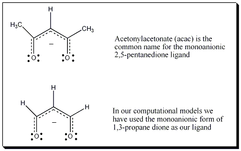

|
The Calculated Transition State of C2V Symmetry for the Rây-Duttt Mechanism is shown on your left
A Transition State of C2V symmetry was located computationally in a Density Functional Theory B3LYP calculation (631G(d) on C,H, O and 5ζ on Ga, Gaussian 03) with an energy barrier of 19.4 kcal/mol. One imaginary frequency was obatined from the
calculation at -84.98i cm-1. The vibrational mode was saved as an xyz file in Jmol. A 3D animation of the vibrational frequency that illustrates the Rây-Dutt Mechanism is provided on the previous page.
In this computation and animation 1,3-propanedione serves as an analog for the acac (acetylacetonate = 2,5-pentanenedione) ligand.

The Rây-Dutt mechanism and Bailar twist mechanism for the interconversion of the Δ and Λ isomers has been examined experimentally by NMR for similar GaL3 species.
- Experimental work using 19F VT-NMR reported the Ga(tfac)3 to have a lower energy barrier for the Rây-Dutt than the Bailar Twist with Ea = 20.8 kcal/mol (87 kJ/mol) in CDCl3. Our
computational work (Gaussian 09 in simulated CHCl3 solvent, B3LYP DFT computation with a 631G(d) basis for C,H, O and F and 5ζ on Ga) gave
ΔG‡ of 82.0 kJ/mol and an Ea of 77.8 kJ/mol
Fay, R. C., Piper, T. S.; Inorg. Chem. 1964, Vol 3, p. 348-356 (Experimental Work)
Cass, M. E., Rzepa, H. S.; Manuscript submitted for review. (Computational work)
- Experimental work using 1H VT-NMR reported the Ga(α-R-tropolanate)3 to racemize via the Bailar Twist with a barrier of 10 kcal/mol (42 kJ/mol) in CH2Cl2. Our
computational work (Gaussian 09 in simulated CH2Cl2 solvent, B3LYP DFT computation with a 631G(d) basis for C,H, and O and 5ζ for Ga) gave
ΔG‡ of 42.6 kJ/mol.
Eaton, S.S., Eaton, G.R., Holm, R. H., Muetterties, E.L.; J. Am. Chem. Soc. 1973, Vol 95, p. 1116-1124. (Experimental Work)
Cass, M. E., Rzepa, H. S.; Manuscript submitted for review. (Computational work)
- In another study (where L = substituted catechols) the Bailar Twist was found to have a lower activation barrier (53 kJ/mol)
than that of the Rây-Dutt (67 kJ/mol). (Experimental and computational work)
See Reference: Kersting, B., Telford, J.R., Meyer, M., Raymond, K.N.; J. Am. Chem. Soc., Vol 118, 1996, p. 5712-5721, (Experimental Work)
DOI.
AND Davis, A.V., Firman, T.K.,
Hay, B.P, Raymond, K.N.; J. Am. Chem. Soc., Vol 128, 2006, p. 9484-9496,
DOI
- In a study with the GaL3 complex (L = fox = 5-fluoro-8-hydroxyquinoline),
both the Bailar Twist and Rây-Dutt Mechanisms are observed with similar
activation barriers of 17 kcal/mole (70.6 kJ/mol).
See Reference: Gromova, M., Jarjayes, O., Hamman. S., Nardin, R. Beguin, C. Willem, R.;
European Journal of Inorganic Chemistry, 2000, 3, p. 545-550.
|